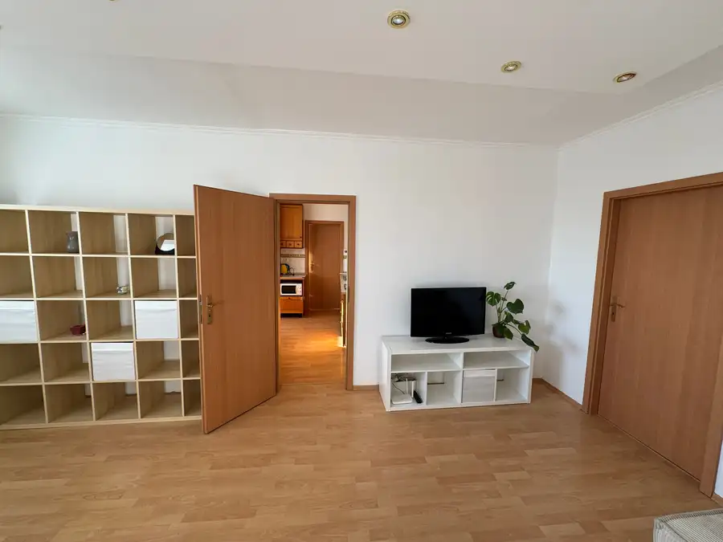
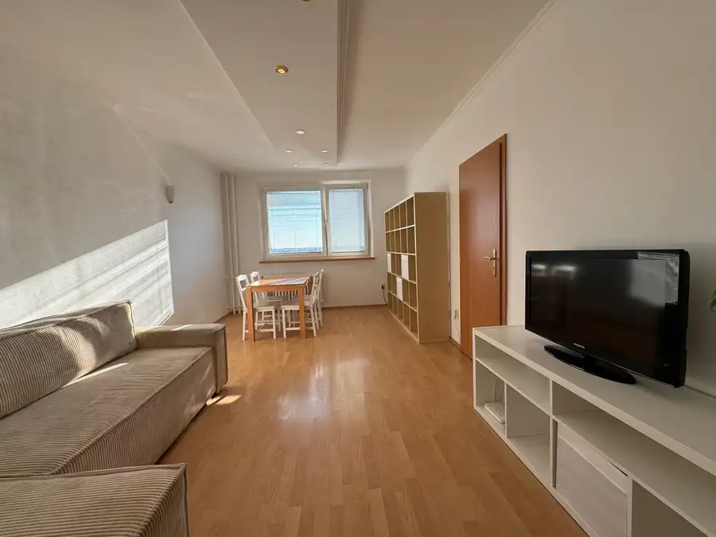
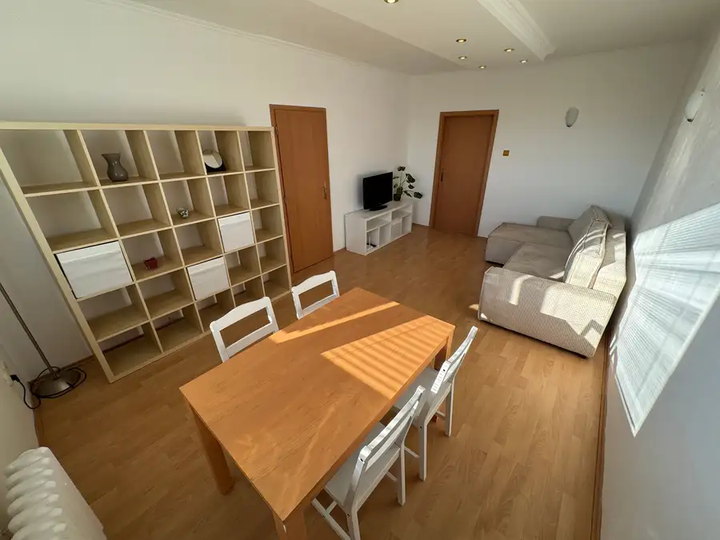
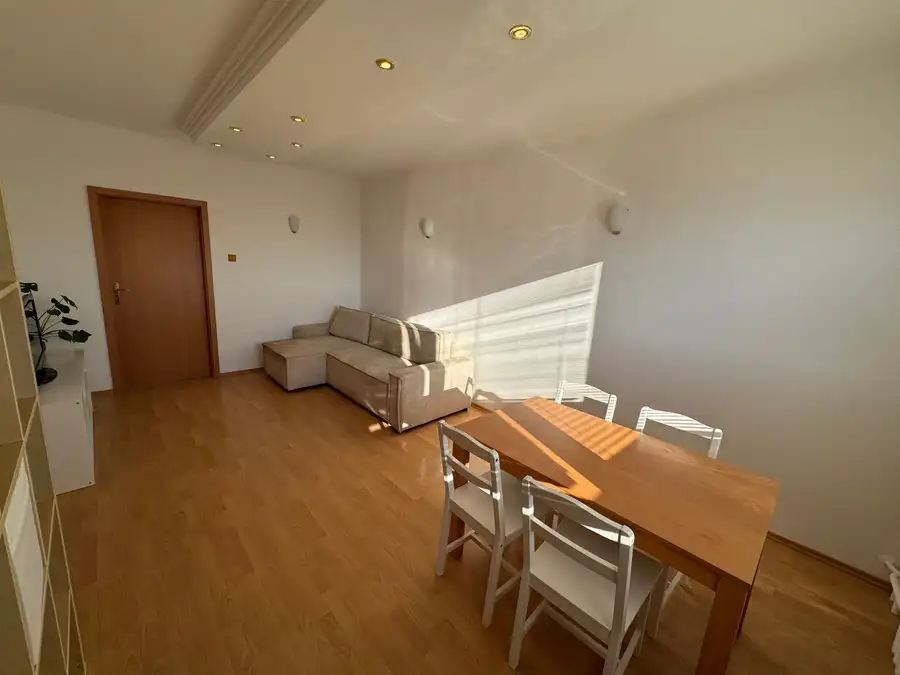
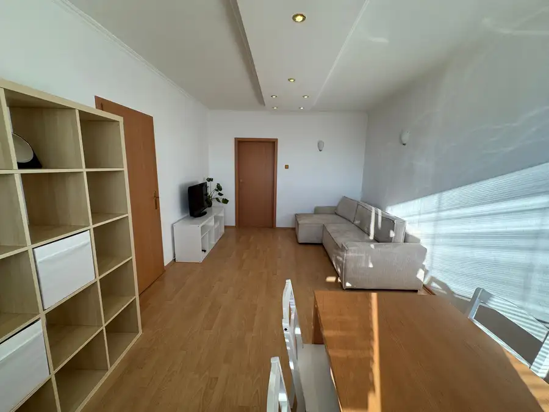
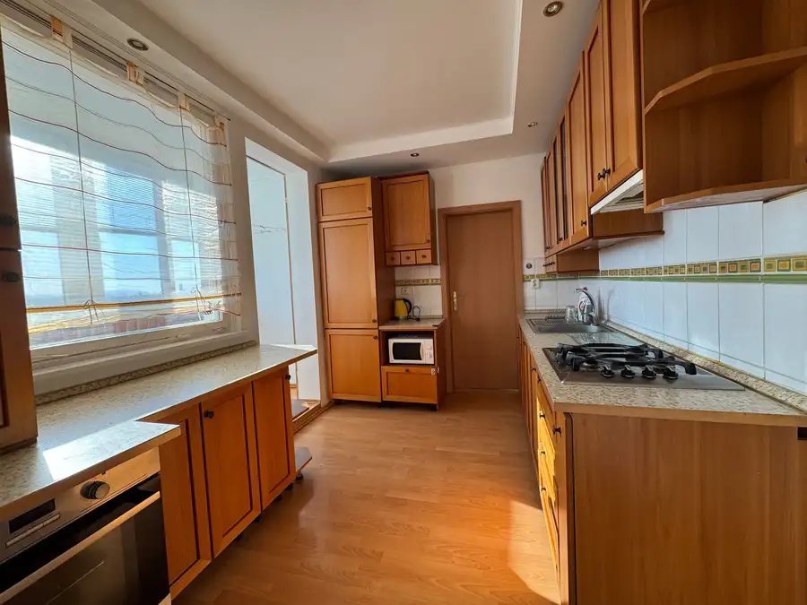
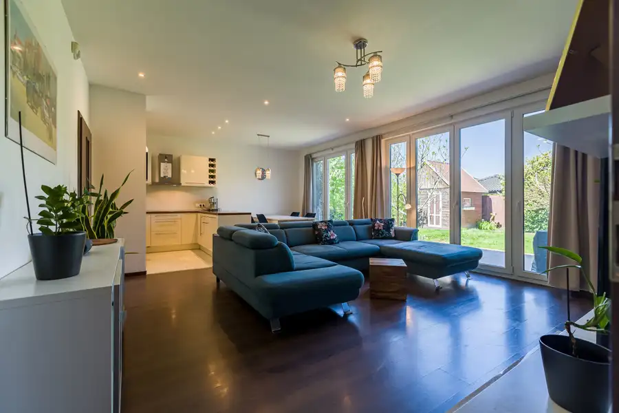
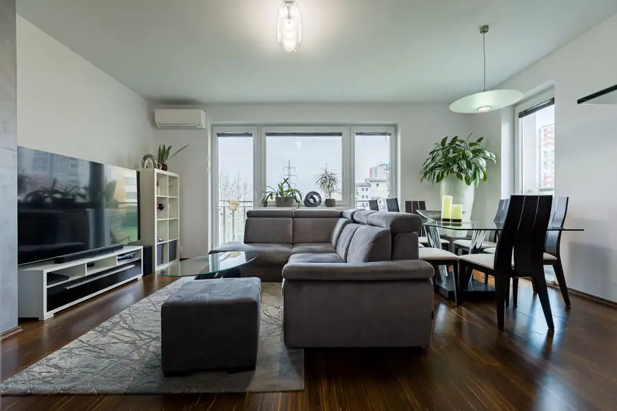
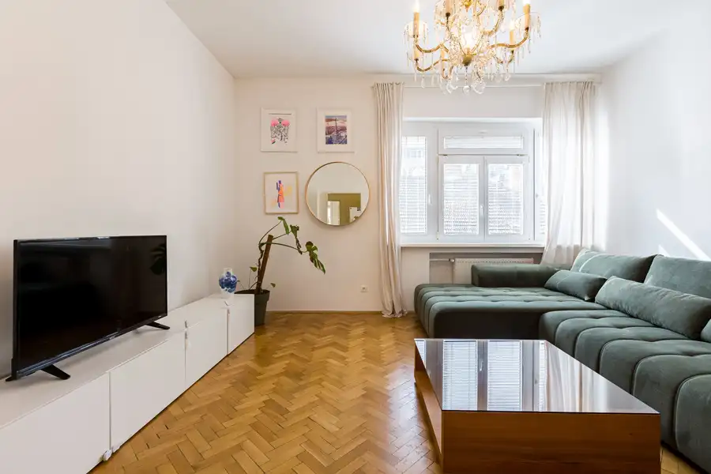

PREDAJ, priestranný a slnečný 3 izbový byt s krásnym výhľadom na Baltskej ulici
Podunajské Biskupice, Bratislava






- Dispozícia3-izbový
- Plocha72 m²
- Poschodie10. z 12
- StavKompletná rekonštrukcia
- VlastníctvoOsobné
O nehnuteľnosti
Ponúkame Vám na predaj priestranný a slnečný 3 izbový byt na Baltskej ulici. Rozloha bytu - 72 m2Poschodie - 10/12Výťah - áno 2xPivnica - áno( 1,3m2 )Lodžia - zasklenná a prerobená ako súčasť bytuDom - zateplenýDISPOZÍCIA BYTU Vstupná chodba so zatváracím roolldoorovým botníkom z ktorej je vstup do obývacej izby. Pričom druhá časť chodby má veľký rolldoor oproti ktorému sa nachádza samostatné WC a samostatná kúpeľňa s vaňou. Na konci chodby je vstup do izby v ktorej je rozťahovacia posteľ, pracovný stôl, vstavaná skriňa a televízor. Ďalšou menšou chodbou sa dostaneme do kuchyne, ktorá disponuje vstavanou rúrou na pečenie, chladničkou, plynovým sporákom, mikrovlnkou. Kuchyňa je spojená s loggiou, ktorá je zasklenná a vzniknutý priestor sa stal súčasťou kuchyne. Z kuchyne je vstup do spálne s manželskou posteľou a skriňou. Z druhej strany kuchyne sa vchádza do obývacej miestnosti v ktorej je umiestnený jedálenský stôl so štyrmi stoličkami, poličková skriňa, televízor so skrinkou a sedačka v tvare L. Byt prešiel kompletnou rekonštrukciou vrátane elektroinštalácie a rozvodov, ktorá bola realizovaná približne pred 12 rokmi. Odvtedy bol byt priebežne udržiavaný a je v peknom, zachovalom a plne funkčnom stave, čo zodpovedá aj aktuálnym fotografiám.Byt je možné užívať bez potreby okamžitých investícií do rekonštrukcie a novému majiteľovi ponúka príjemné bývanie v už upravenom priestore a predáva sa zariadený.BENEFITY- vymenené elektrické rozvody v celom byte- kľudná a tichá štvrť s množstvom zelene- parkovanie priamo pod domom- dostatok úložného priestoru- uzamykateľná predchodba pre štyri byty na poschodí- krásny výhľad- nové detské ihrisko priamo pod domom- dobrí a slušní susedia- kompletná infraštruktúra LOKALITAByt sa nachádza na Baltskej ulici v Podunajských Biskupiciach, v pokojnej mestskej časti Bratislavy s príjemným charakterom a dobrou dostupnosťou všetkého potrebného pre každodenný život.V blízkom okolí nájdete obchody, potraviny, služby, školy, škôlky, zdravotnú starostlivosť aj možnosti na občerstvenie. Výhodou je tiež dostupnosť zastávok MHD, vďaka ktorým sa pohodlne dostanete do centra Bratislavy aj do ďalších častí mesta.Podunajské Biskupice ponúkajú zároveň dostatok zelene a priestoru na oddych. Okolie je vhodné na prechádzky, šport či trávenie voľného času vonku, pričom si stále zachovávate výhody bývania v Bratislave.Lokalita je vhodná pre ľudí, ktorí hľadajú pokojnejšie bývanie mimo rušného centra, no zároveň nechcú robiť kompromisy v dostupnosti služieb a dopravyCENA - 244 900,-Eur je vrátane provízie pre RK v ktorej je zabezpečený kompletný právny servis súvisiaci s predajom nehnuteľnosti.+421 911 122 771dobransky@dconsult.sk
Parametre
- Cena vrátane energií
- Nie
- Druh
- 3 izbový byt
- Dátum zverejnenia
- 15. 09. 2026
- Energetický certifikát budovy
- nie je
- Podlažie
- 10
- Počet nadzemných podlaží
- 12
- Rok poslednej rekonštrukcie
- 2014
- Stav nehnuteľnosti
- Kompletná rekonštrukcia
- Telekomunikácie
- Optická sieť, Internet, Iné
- Typ
- Predaj
- Typ konštrukcie
- Panelová
- Umiestnenie
- Ďalšie nadzemné podlažie
- Vlastníctvo
- Osobné
- Vybavenie
- Výťah, Verejné parkovanie
- Vykurovanie
- Ústredné
- Úžitková plocha
- 72 m²
Kde to je


Mohlo by Vás zaujímať

DomNové 399 900 €PREDAJ, 4 izbový zariadený Rodinný dom - Bungalov, Malinovo - TRI VODY Malinovo 104 m²
BytNové 399 900 €PREDAJ, Nová cena priestranného 3 izbového bytu s krásnym výhľadom s lodžiou a balkónom na Matejkovej ulici Karlova Ves, Bratislava 3-izbový106.73 m²4. podlažie
BytNové 350 000 €PREDAJ, Nová cena krásneho a slnečného 3 izbového bytu na Križkovej ulici v Starom Meste Staré Mesto, Bratislava 3-izbový80.9 m²4. podlažie